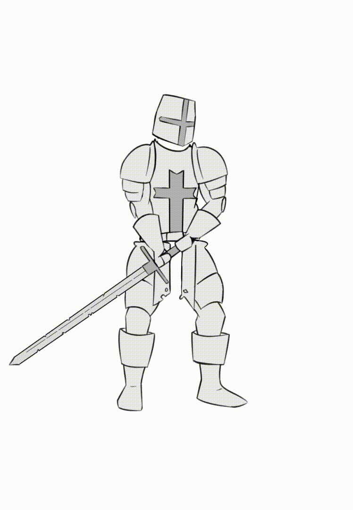
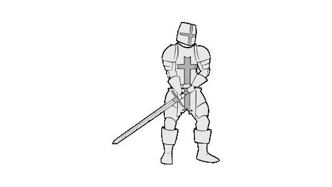
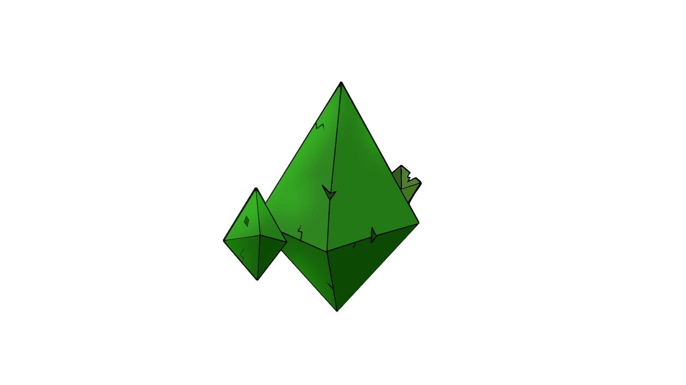
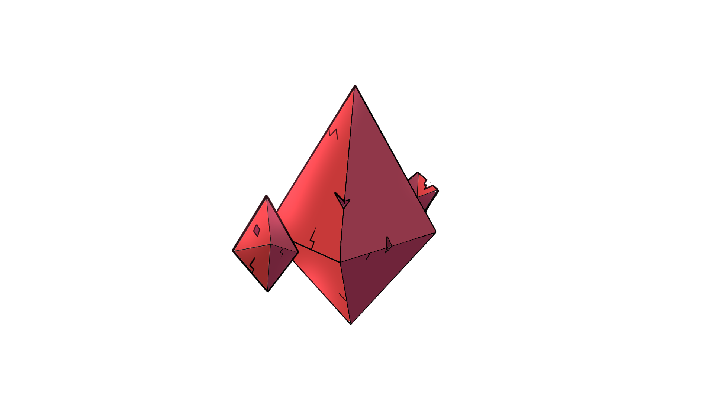
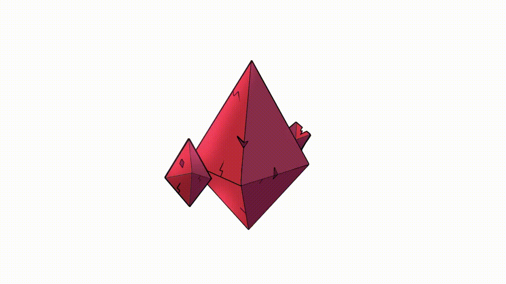

In the span of 8 weeks, we worked as a duo on making Our Own Game. It is a 2D Fighting Game for 2 Players that also uses Controller Inputs. We used the Unity Game Engine.
I was Responsible for:
Overall Visual & Character Design of the Game
Drawing the Character & most of the Assets
Planning out & Making all the animations
Sound Mixing & Implementing the in-game Audio Mixer

This is a Timelapse of me Drawing the 'Crusader' Character in its' Basic in-game Pose.

These are 3 out of 11 Total Animations for the 'Crusader'.



These are the Items that restore 'MP' and 'HP' for the Player that picks it up.